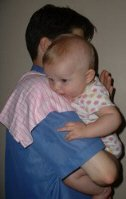

|
 |
|||||||||
Burping Baby TipsLast ResortIf you've tried all the various burping baby positions and he still seems fussy and gassy, try using Infant gas drops.They work instantly and are a mommy essential! What is the consequence of popping that balloon? A happier baby. What's the lesson for you? Learn how to get that burp. I love burping babies. It's so soothing to feel Elena's little head resting on my shoulder and the rhythmic tap-tap-tapping of my hand on her back. Not to mention the ultimate burping touchdown: That small verbal explosion. YES! I silently cheer in my head. I single-handedly (pardon the pun) provided that ounce of comfort. A majority of parents stop burping between 4 to 9 months (although I tend to push those limits) so enjoy these sessions while they last.
The Birth of a BurpWhile the baby is feeding, air can be swallowed and accumulate in his stomach, causing discomfort. Too much air can lead to crankiness, colic, or spitting up (i.e. the invention of infant burp pads).Proper burping technique helps the smaller air bubbles combine into one big bubble that a burping baby releases.
Breastfed Babies
Bottlefed Babies
How to Burp Baby: The Best Burping Baby Positions
Over the Shoulder PositionI generally begin in this position to burp. I love this position. Lay your baby over your shoulder (with your infant burp pad in place, of course!), so your collar bone presses against her tummy. That pressure is vital to getting a good burp. She should be leaning comfortably against your chest, sitting on your arm.
If several fruitless minutes have passed and she still seems fussy, it's time to "break out the big guns"
and try another position.
Over the Lap PositionPlace your burp cloth on your thigh (and perhaps one on the floor as well). Lay her on top so her mouth is over the rag and your knee is applying the vital pressure on her stomach.
Gently rub and pat
her back until gas is released.
Over the Hand PositionSit your newborn on your lap with the palm of your left hand against his tummy and his chin resting in the "V" between your thumb and index finger (if you're right handed).Lean him forward slightly, so that most of his weight is resting against your palm (providing that vital pressure).
If he is less than three months old, make sure you are supporting his neck. Gently pat his back with your
right hand. Have your burp rag draped over your left hand for possible spit ups.
The Bottom BurpStill fussy? Try helping her "bottom burp" by flexing her knees up to her chest a few times. She may pass a little gas and feel better.If it seems like one position isn't producing a burping baby, try switching to another. I often will get the burp simply by adjusting her body to a different position. When Should You Burp Your Infant?If you are bottle feeding, you can choose to burp every few ounces. If you've chosen to breast feed, every 10-15 minutes is recommended (or when you switch breasts).Personally, I look at Elena for my burping cues. If she's starting to fuss on the breast (or bottle) and is squirmy and frowning, that usually means she needs to burp. I remove her and burp for a minute. If nothing comes up, I put her back on the breast and let her continue feeding. Burping baby at night is usually unnecessary, because babies are more relaxed and swallow less air. If she does seem fussy, though, burp her for a few minutes before putting her back down.
It's truly amazing how much a little gas can upset their tiny tummies. There have been times when Elena has been unbearably fussy, only to release a little gas (barely even audible) and instantly calm down. Other times she seems just fine and then explodes in a burp that shakes the rafters. Techniques like these have stood the test of time and almost always produce a burping baby. These tender moments are fleeting and precious, so burp often (even when unnecessary!).
All the photos on this page can be found at www.flickr.com and
were used according to licensing requirements.
 Stay Connected to the EiR
|

 I just subscribed to the site, and I'm very happy I did. I have worked in the medical field for several years and love to have good resources for when things come up...
I just subscribed to the site, and I'm very happy I did. I have worked in the medical field for several years and love to have good resources for when things come up...
~ Crystal S. What a great site and thanks for having it available! ~ Bernadette W. I'm very excited to start receiving the newsletter. I've checked out your site a couple times and I loooovve how it's arranged, your language, and tips - it's great! ~ Emily N. Heather, I can't express how happy I am I discovered your site! ~ Liza T. Thank you Heather, for your wonderful newsletter. There is always something new! ~ Desiree T. I'm a 1st time young mom, 23 and single, so I have found very very helpful...I can't seem to stop myself telling everyone I know about you, some thought you were my mom! ~ Vuyiswa N. Your website is very helpful and I discovered a couple of great online stores. 'Cause I'm not a big reader, it is very nice that I can find the most important information through your website. ~ Tonya G. Thanks Heather! Your Milestone eBook is SO detailed and so correct. My son is doing all or most of the things and many are not mentioned in the usual books/sites. Great job and keep it up! ~ Anwesha C. Thanks so much for creating such an AWESOME website. I really appreciate your sense of humor and real writing style. ~ Andrea Z. My baby refused all bottles until you showed me the MAM bottle. Thank you so much for the recommendation. I wouldn't have known about them if not for your website. ~ Jennifer at Sweet Lilly Confections Thank you ladies! Talk about great motivation to keep writing... 
|
||||||||
|


| |||||||||